FileMaker ServerにLet's EncryptのSSL証明書を設定する
FileMaker Server(Windows Server)にLet’s EncryptのSSL証明書を設定する際のメモ。
FileMakerでは、Let’s Encryptはサポートされていないため、すべて自己責任でチャレンジしてください。
更新
2019-02-02
以下の記事を書きましたので、よろしければご覧ください。
legoを使ってLet’s EncryptのSSL証明書をDNS認証で発行しFileMaker Serverに設定する方法
作業自体は簡単ですので、開発環境で使う場合など、チャレンジするのは良いと思います。
ちなみに、私はLet’s Encryptを利用しています。
環境
- Windows Server 2016 Datacenter(GCP Compute Engine)
- FileMaker Server 17
- win-acme.v1.9.11.2
作業の前にやったこと
ドメイン
- GCP Cloud DNSにて管理しているドメイン(frudens.app)にサブドメイン(hoge.frudens.app)を追加。
- 追加したサブドメイン(hoge.frudens.app)のAレコードにFileMaker ServerのIPを設定。
Windows Server
- GCP Compute EngineでWindows Serverを起動。
- GCPのファイアーウォールを適切に設定。
- Windows Serverのファイアーウォールを設定。
- FileMaker Serverをインストール。
Windows Server IISを設定する
IISを確認する
サーバーマネージャーからインターネットインフォメーションサービス(IIS)マネージャーを選択する。
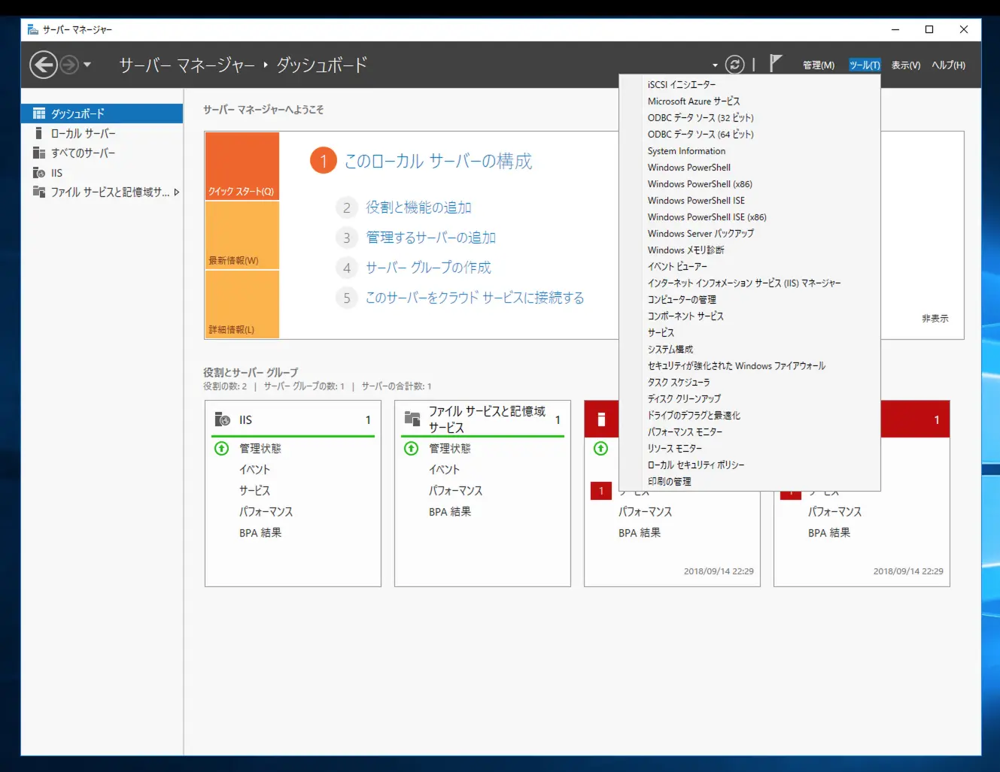
画面左の接続からサイト > FMWebSiteを選択する。
画面右の操作からバインドを選択する。
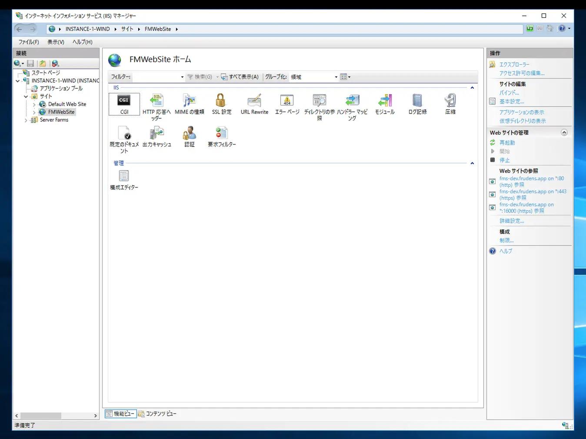
サイトバインドを設定する
FileMaker Serverがインストールされているので、ポート(16000)も設定されています。
ポート80の行を選択し編集を選択します。(もしくはダブルクリック)
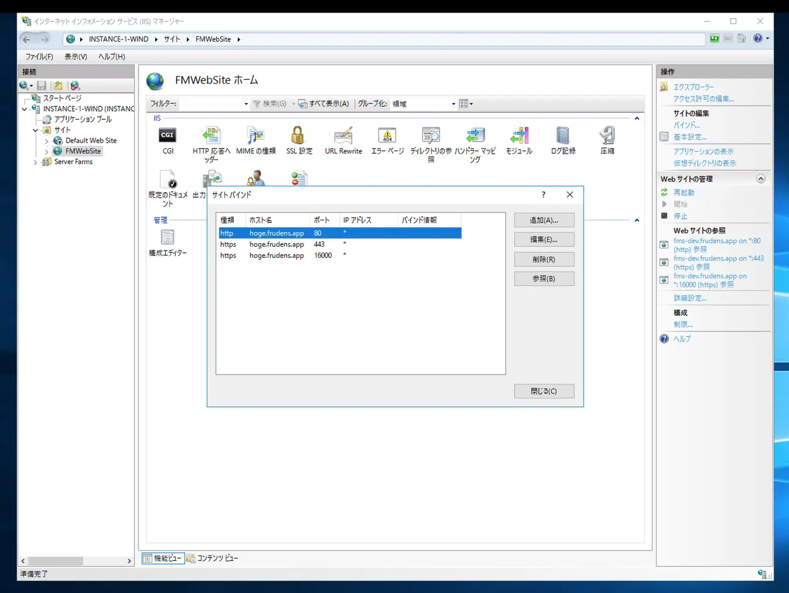
ホスト名にhoge.frudens.appを入力します。
80と同じように443も16000も、hoge.frudens.appを入力します。
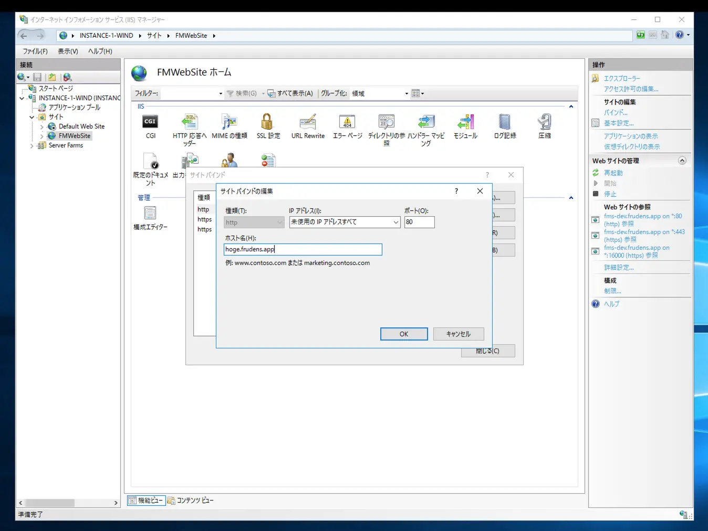
Let’s Encryptを実行するための準備
win-acmeのダウンロード
win-acmeは、Let’s Encryptの証明書の発行作業を、コマンドラインから簡単に実行するためのCLIツールです。
ということで、ダウンロードし展開しましょう。
https://github.com/PKISharp/win-acme/releases
展開する場所はどこでも大丈夫です。今回、私はデスクトップに展開しました。
Webサーバのルートにフォルダを作成する
FileMaker Serverをインストールしたフォルダによってルートは変わりますが、デフォルトの場合は以下のフォルダがWebサーバのルートになるはずです。
C:\Program Files\FileMaker\FileMaker Server\HTTPServer\conf
confの下が.well-known/acme-challengeとなるようにフォルダを作成します。
Windowsだと、GUIからでは.フォルダが作れないと思いますので、コマンドプロンプトなど使ってmkdirしてください。
C:\Program Files\FileMaker\FileMaker Server\HTTPServer\conf\.well-known\acme-challenge
以下のような感じになると思います。
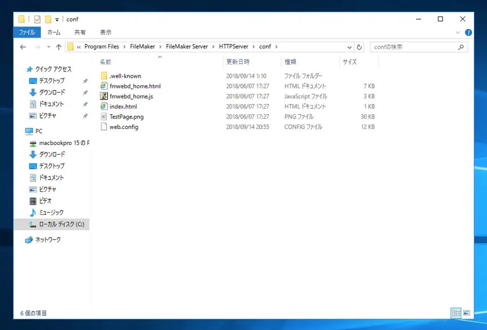
Let’s Encryptのファイルを移動しrenameする
win-acmeを展開したフォルダの中にあるWeb_Config.xmlを、上記で作成したフォルダ\acme-challenge\に移動し、web.configにrenameします。
こんな感じのイメージです。
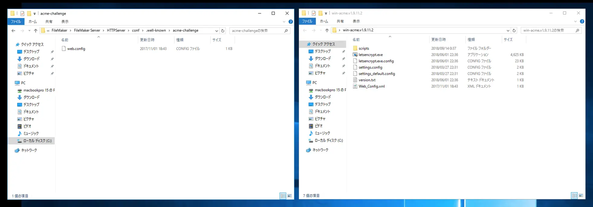
letsencrypt.exeを実行する
準備が整いましたのでletsencrypt.exeを実行します。
CLIツールが起動します。
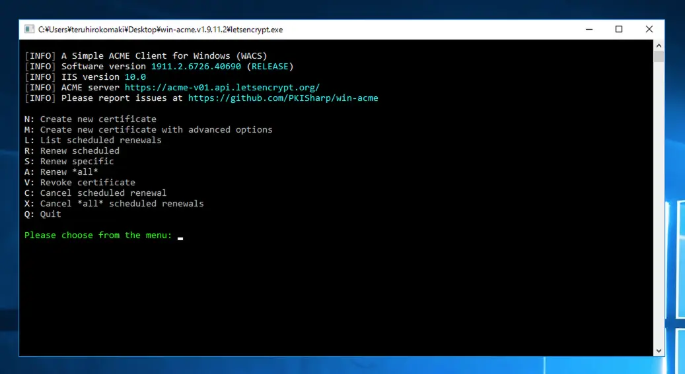
CLIツールの質問に従い、順番に入力していくと完了します。
[INFO] A Simple ACME Client for Windows (WACS)
[INFO] Software version 1911.2.6726.40690 (RELEASE)
[INFO] IIS version 10.0
[INFO] ACME server https://acme-v01.api.letsencrypt.org/
[INFO] Please report issues at https://github.com/PKISharp/win-acme
N: Create new certificate
M: Create new certificate with advanced options
L: List scheduled renewals
R: Renew scheduled
S: Renew specific
A: Renew *all*
V: Revoke certificate
C: Cancel scheduled renewal
X: Cancel *all* scheduled renewals
Q: Quit
Please choose from the menu: n
[INFO] Running in Simple mode
1: Single binding of an IIS site
2: SAN certificate for all bindings of an IIS site
3: SAN certificate for all bindings of multiple IIS sites
4: Manually input host names
C: Cancel
Which kind of certificate would you like to create?: 2
1: FMWebSite
C: Cancel
Choose site: 1
* hoge.frudens.app
Press enter to include all listed hosts, or type a comma-separated lists of exclusions:
[INFO] Plugin IISSite generated target [IISSite] FMWebSite (SiteId 2) [1 binding - hoge.frudens.app @ C:\Program Files\FileMaker\FileMaker Server\HTTPServer\conf\]
[INFO] Authorize identifier: hoge.frudens.app
[INFO] Cached authorization result: valid
[INFO] Requesting certificate FMWebSite 2018/9/15 15:03:41 ??
[INFO] Saving certificate to C:\ProgramData\win-acme\httpsacme-v01.api.letsencrypt.org
[INFO] Installing certificate in the certificate store
[INFO] Adding certificate FMWebSite 2018/9/15 15:03:41 ?? to store WebHosting
[INFO] Installing with IIS...
[INFO] Updating existing https binding hoge.frudens.app:443
[INFO] Updating existing https binding hoge.frudens.app:16000
[INFO] Committing 2 https binding changes to IIS
[INFO] IIS will serve the new certificates after the Application Pool IdleTimeout has been reached.
[INFO] Uninstalling certificate from the certificate store
[INFO] Removing certificate FMWebSite 2018/9/14 23:35:40 ?? from store WebHosting
[INFO] Renewal for FMWebSite succeeded
[INFO] Next renewal scheduled at 2018/11/9 6:03:44 ??
N: Create new certificate
M: Create new certificate with advanced options
L: List scheduled renewals
R: Renew scheduled
S: Renew specific
A: Renew *all*
V: Revoke certificate
C: Cancel scheduled renewal
X: Cancel *all* scheduled renewals
Q: Quit
Please choose from the menu: q
最初から最後までの実際の画像を…
上記のテキストと画像は同じものではないので、時間など若干違いますが、気にしないでください。
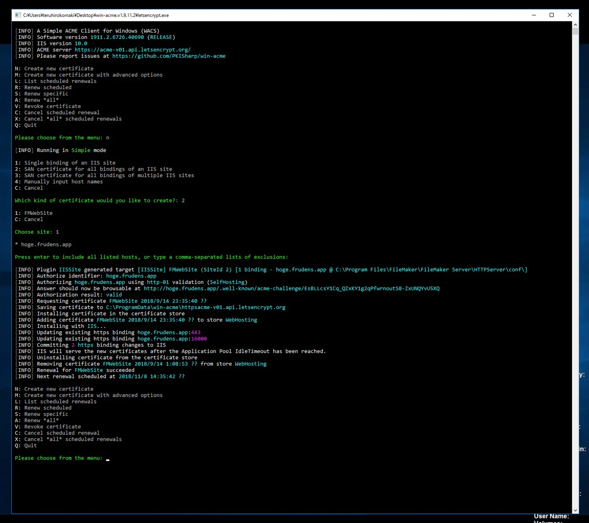
IISのサイトバインドを確認する
完了しましたので、IISのバインドを確認します。
SSL 証明書の部分に表示されています。
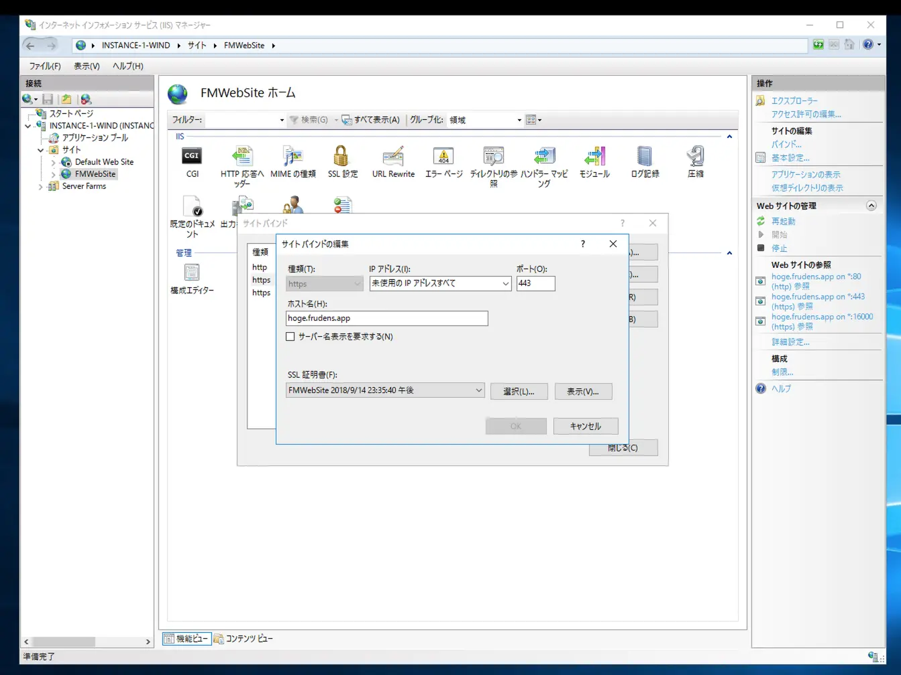
httpsでアクセスする
試しにhttps://hoge.frudens.appにアクセスしてみます。
証明書も認識しています。
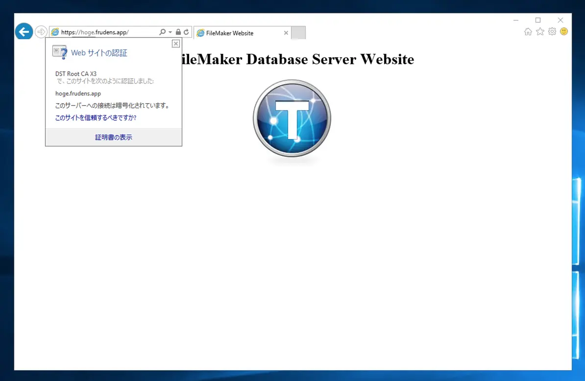
証明書をFileMaker Serverにインストールする
さきほど作成した証明書をFileMaker Serverにインポートします。
証明書の場所
作成された証明書は、以下のフォルダにあります。
C:\ProgramData\win-acme\httpsacme-v01.api.letsencrypt.org\
C:\ProgramData\win-acme\httpsacme-v01.api.letsencrypt.org>dir
Volume in drive C has no label.
Volume Serial Number is D8A2-01B9
Directory of C:\ProgramData\win-acme\httpsacme-v01.api.letsencrypt.org
2018/09/15 15:03 <DIR> .
2018/09/15 15:03 <DIR> ..
2018/09/15 15:03 1,174 ca-FMWebSite-crt.der
2018/09/15 15:03 1,674 ca-FMWebSite-crt.pem
2018/09/15 15:03 3,378 FMWebSite-all.pfx
2018/09/15 15:03 3,864 FMWebSite-chain.pem
2018/09/15 15:03 1,550 FMWebSite-crt.der
2018/09/15 15:03 2,190 FMWebSite-crt.pem
2018/09/15 15:03 1,006 FMWebSite-csr.pem
2018/09/15 15:03 1,050 FMWebSite-gen-csr.json
2018/09/15 15:03 1,807 FMWebSite-gen-key.json
2018/09/15 15:03 1,702 FMWebSite-key.pem
2018/09/15 15:03 542 FMWebSite.history.json
2018/09/14 01:08 1,015 Registration
2018/09/15 15:03 420 Renewals
2018/09/14 01:08 1,679 Signer
14 File(s) 23,051 bytes
2 Dir(s) 30,963,933,184 bytes free
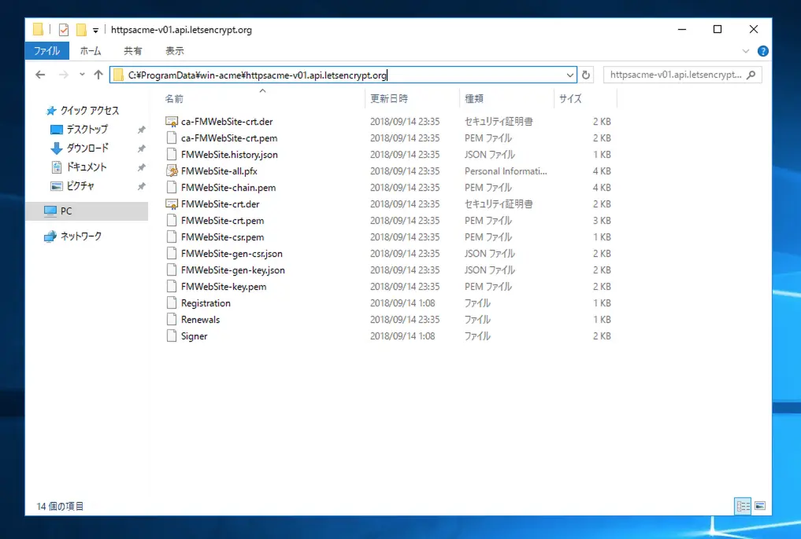
インポートする
Admin Consoleにログインし、SSL証明書のインポートをします。
fmsadminコマンドを使ってインポートしてもよいです。(最後の方にコマンドは書いています。)
| ファイル | ファイル名 |
|---|---|
| 署名済みの証明書ファイル | FMWebSite-crt.pem |
| プライベートキーファイル | FMWebSite-key.pem |
| 中間証明書ファイル | FMWebSite-chain.pem |
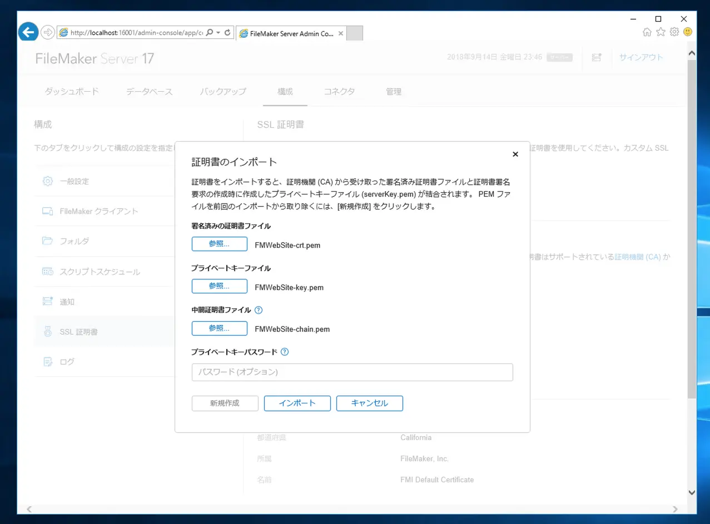
インポートできました。
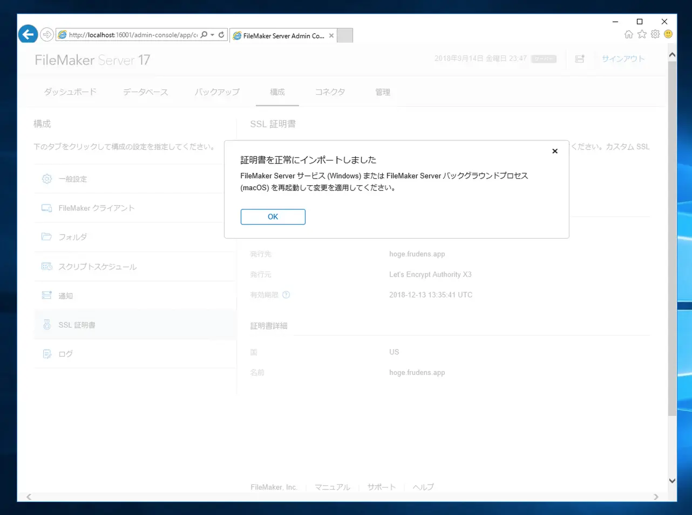
インポートできたので、再起動します。
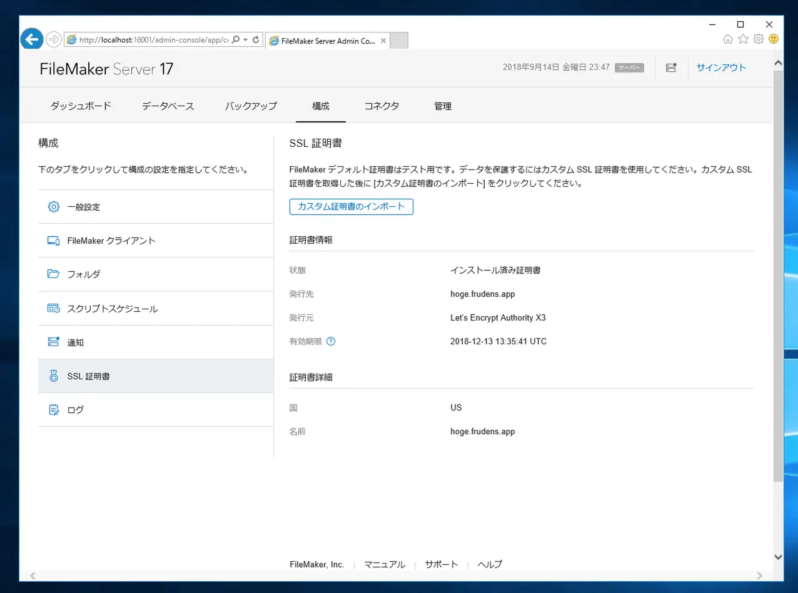
FileMakerからアクセスする
アクセスしてみます。
緑色になっています。
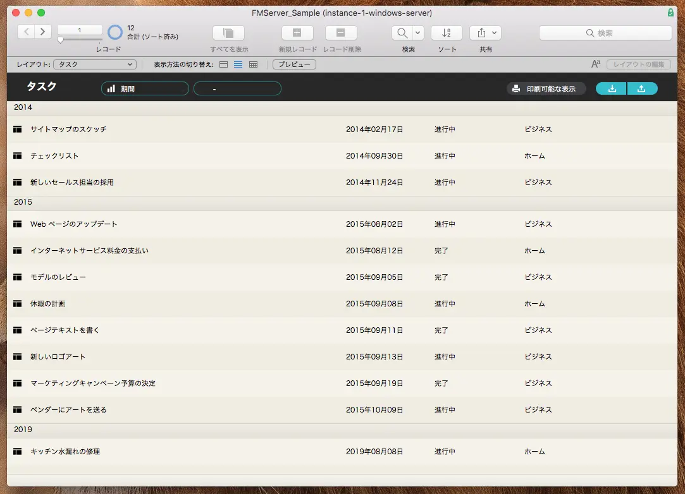
ロックアイコンをクリックすると、証明書が表示されます。
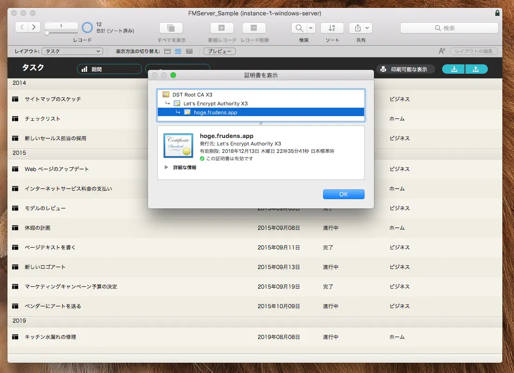
SSL証明書の更新作業(renew)の自動化
Let’s EncryptのSSL証明書の有効期限は、3ヶ月間です。
自動的にrenewコマンドを実行してほしいので、タスクスケジューラに登録します。
(私の環境では、自動的にタスクスケジューラに登録されていました。)
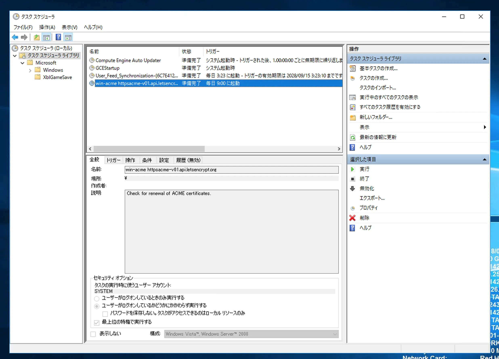
タスクスケジューラにrenewを登録する
もし、登録されていないようでしたら、簡単にコマンドで設定できるようです。
自分でバッチを作っても良いと思います。
Windows Task Scheduler Settings
Microsoft Windows [Version 10.0.14393]
(c) 2016 Microsoft Corporation. All rights reserved.
C:\Users\user>C:\Users\user\Desktop\win-acme.v1.9.11.2\letsencrypt.exe --renew --baseuri "https://hoge.frudens.app"
FileMaker Serverへのインポートの自動化
上記の作業ではC:\ProgramData\win-acme\httpsacme-v01.api.letsencrypt.org\にある、証明書が更新されるのみですので、FileMaker Serverの証明書は更新されません。
ということで、FileMaker Serverの証明書を更新する作業をfmsadminコマンドで書いてバッチファイルにしておけば、タイミングを見てダブルクリックで手軽に更新できます。
FileMaker Serverのrestartもあるので、メンテナンスの際に実行するのが良いと思います。
(削除してから、インポートする必要があります。)
fmsadmin certificate delete
fmsadmin certificate delete -y -u USER -p PASSWORD
fmsadmin certificate import
fmsadmin certificate import C:\ProgramData\win-acme\httpsacme-v01.api.letsencrypt.org\FMWebSite-crt.pem --keyfile C:\ProgramData\win-acme\httpsacme-v01.api.letsencrypt.org\FMWebSite-key.pem --intermediateCA C:\ProgramData\win-acme\httpsacme-v01.api.letsencrypt.org\FMWebSite-chain.pem -y -u USER -p PASSWORD
セキュリティについて
今回の作業時には、FileMaker Serverのポート(80, 443など)を開ける必要があります。
Data APIを使う場合などは、443を開ける必要はあるかもしれませんが、基本的には開けないほうが良いです。
そのため、作業終了時には、ポートやファイアーウォールを適切な状態に戻しておきましょう。
当然ですが、更新の際にはポートを開ける必要があります。
FileMaker製品でサポートされるSSL証明書
FileMaker製品でサポートされるSSL証明書を購入する場合は、以下のリンクを参照してください。
FileMaker製品でサポートされるSSLサーバー証明書の販売元と種類の一覧
あとがき
Let’s Encrypt は「安全なのか？」みたいな話をする人もいるかも知れませんが、個人的には問題ないと思っています。
ご自身でググってください。
参考
https://www.emic.co.jp/fmpress/services/ssl/
https://twitter.com/HiromitsuTakagi/status/1004013636883382274